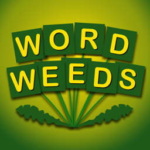

Privacy Policy
Word Weeds · Effective November 8, 2026
Word Weeds is a word game made by Vince Vogel (AppSoftWorks) for iPhone, iPad and Android. It does not collect, use, share or sell any personal information.
What the game stores
Player names, high scores, Daily Challenge results and settings are stored only on your phone or tablet. They are not sent to us or anyone else. Deleting the app deletes them.
No accounts, ads, analytics or tracking
Word Weeds has no accounts, contains no advertising or analytics software, and does not track you across apps or websites. It works offline.
Game Center (optional, iPhone and iPad)
If you are signed in to Apple's Game Center and leave Game Center leaderboards on in the game's Settings, your Survival and Daily Challenge scores are posted to Game Center leaderboards so you can compare them with other players. Game Center is run by Apple under Apple's privacy policy; Word Weeds itself receives no information about you. Turn the setting off, or sign out of Game Center, and nothing is shared.
Apart from optional Game Center leaderboards, the game does not send data over the internet.
Purchases
If Word Weeds offers an optional in-app purchase, it is handled entirely by the App Store or Google Play. We never see your payment details.
Children
Word Weeds does not collect information from anyone, including children.
Changes and contact
If this policy changes, the new version will be posted at this address with a new effective date.
Questions about this policy? Email appsoftworks7@gmail.com.